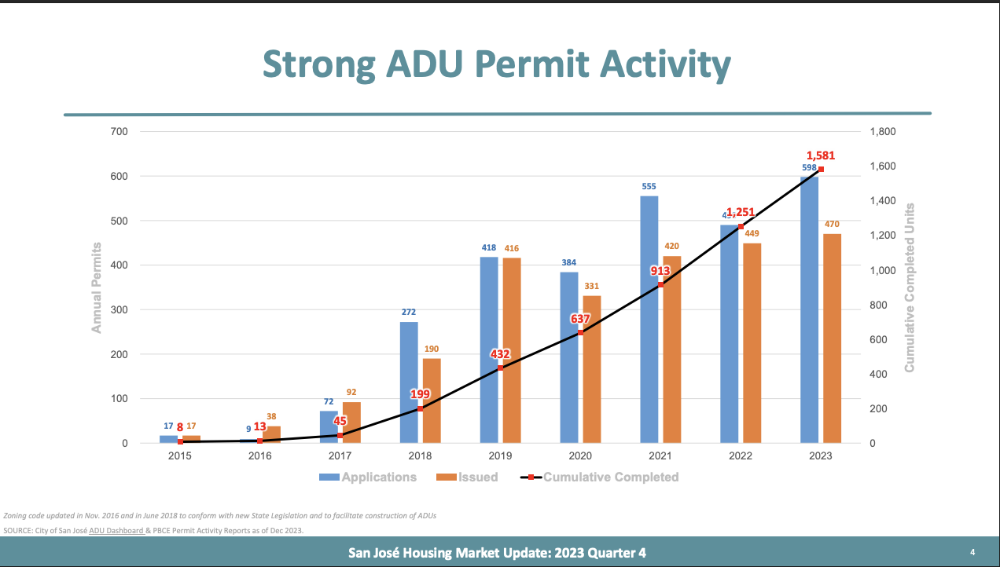
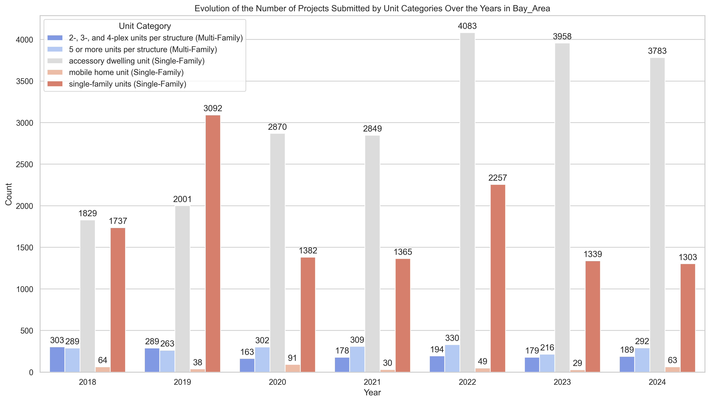
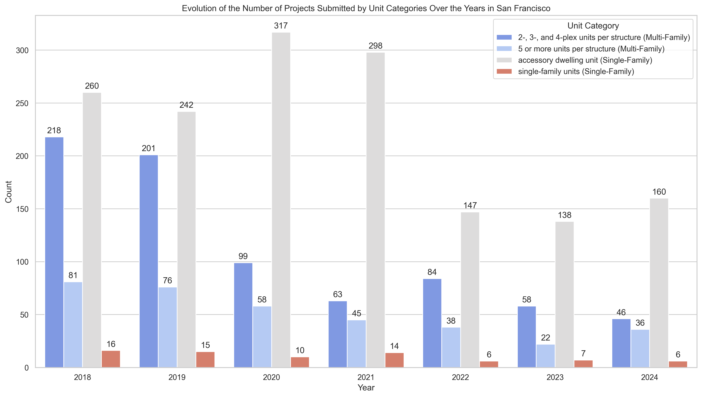
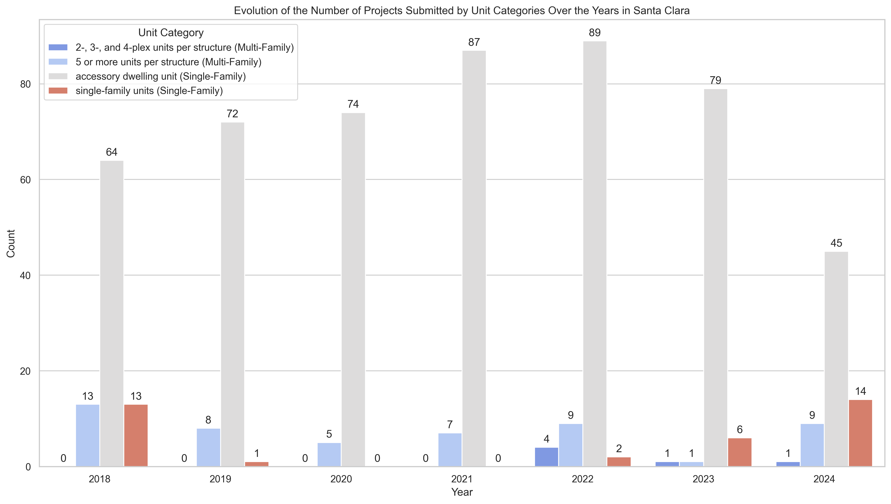
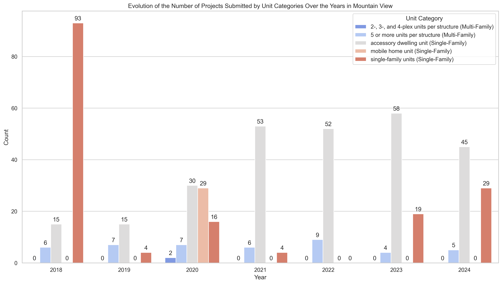

1.1 Background on the Housing Element in San José
• The Housing Element is a state-mandated plan that jurisdictions in California must update every eight years to outline how they will accommodate future housing needs.
• For the 6th Housing Element cycle (2023–2031), local governments in the Bay Area were required to submit a compliant Housing Element to the California Department of Housing and Community Development (HCD) by January 31, 2023.
• San José adopted its Housing Element on June 20, 2023, after making revisions based on feedback from HCD.
• HCD certified the Housing Element as compliant on January 29, 2024.
• As a result, San José was subject to the Builder’s Remedy from February 1, 2023 to January 29, 2024, a total of 363 days.
• During this period, developers could submit Builder’s Remedy applications bypassing local zoning standards if the project included at least 20% affordable units, as required by state law.
1.2 Background Information: Builder’s Remedy Data & Matching Strategy
1.2.1 Summary
- Distance under 100 m
- Total number of units between 80 percent and 120 percent of the BR project.
- 19 have a submission date difference under 5 days
- 1 has a difference of 198 days
1.2.2 Dataset Update
1.2.3 Matching Results
1.2.3.1 Bay Area
- BR Projects Detected: 44.64 % (50 / 112)
- Affordable Units Detected: 61.32 % (2,803 / 4,571)
- Total Units Detected: 58.25 % (10,840 / 18,608)
1.2.3.2 San José
- BR Projects Detected: 58.82 % (20 / 34)
- Affordable Units Detected: 71.15 % (1,344 / 1,889)
- Total Units Detected: 65.19 % (3,567 / 5,472)
2. Inclusionary Housing in San José: Summary of Project Characteristics and Affordability Compliance
2.1 Explanation of Terms and Assumptions
This analysis uses two categories of affordability rules, based on publicly available information from the City of San José:
• Simplified Rule: Based on guidance from San José’s official housing website
• Strict Rule: Based on the San José Municipal Code
2.1.1 Amendment Context
• Pre-Amendment Projects: submitted before March 2, 2021
- Subject to affordability requirements if the project includes more than 20 units
• Post-Amendment Projects: submitted on or after March 2, 2021
- Subject to affordability requirements if the project includes more than 10 units
2.1.2 Simplified Rule (Applies to Pre- and Post-Amendment Projects)
A project satisfies the requirement if it meets one of the following:
Owner-Occupied Projects:
• At least 15% of total units are affordable
Renter-Occupied Projects:
• At least 15% of total units are affordable, or
• At least 10% of units are affordable to very low-income households
2.1.3 Strict Rule (Applies Only to Post-Amendment Projects)
A project satisfies the requirement if it meets one of the following:
Owner-Occupied Projects:
• At least 15% of total units are affordable
Renter-Occupied Projects:
• 5% of units are affordable to each of: very low-, low-, and moderate-income households, or
• 10% of units are affordable to very low-income households
2.1.4 Exemptions and Alternatives to On-Site Compliance
However, developers can get around these on-site rules using several alternative strategies. Here are a few examples:
In-Lieu Fee: Developers can pay a fee to the city instead of building the units. This fee is allocated to a dedicated fund used by the city to finance other affordable housing projects.
Off-Site Construction: Developers may build the required affordable units at a different location, subject to city approval. The number of required units may be higher if built off-site.
Land Dedication: A developer can dedicate a parcel of land to the city, which can then be used to construct affordable housing.
For example, a project subject to affordability requirements with no listed affordable units may not be a mistake. It could reflect the use of one of these options.
2.2 Results
2.2.1 All Projects
2.2.1.1 All Units
• Number of Projects: 2032
• Total Units: 43678.0
• Total Affordable Units: 10066.0
• Distribution of Project Types: Single-Family: 89.5% (1819), Multi-Family: 10.2% (208), mixed: 0.2% (5)
• Minimum Affordable Units: 0.0
• Maximum Affordable Units: 444.0
• Mean Affordable Units: 4.95
• Median Affordable Units: 0.0
• Average Share of Affordable Units: 28.9%
• Share of Projects that Include Any Affordable Units: 30.3% (616)
2.2.1.2 Pre‑Amendment Units
• Number of Pre‑Amendment Projects: 115
• Total Units: 24605.0
• Total Affordable Units: 3397.0
• Distribution of Project Types (Pre‑Amendment): Multi-Family: 83.5% (96), Single-Family: 16.5% (19)
2.2.1.3 Post‑Amendment Units
• Number of Post‑Amendment Projects: 1917
• Total Units: 19073.0
• Total Affordable Units: 6669.0
• Distribution of Project Types (Post‑Amendment): Single-Family: 93.9% (1800), Multi-Family: 5.8% (112), mixed: 0.3% (5)
2.2.2 Projects Subject to Affordability Requirements (Simplified Rule)
• Share of All Projects that Are Subject to Affordability Requirements (Simplified Rule): 8.6% (174)
• Unit Type Distribution among Projects Subject to Affordability Requirements: Multi-Family: 93.7% (163), Single-Family: 5.7% (10), mixed: 0.6% (1)
2.2.2.1 All Projects Subject to Affordability Requirements (Simplified Rule)
• Share that Meet the Affordability Requirements: 44.8% (78)
• Share that Include Any Affordable Units: 47.1% (82)
2.2.2.2 Pre-Amendment Projects
• Share of Pre-Amendment Projects that Are Subject to Affordability Requirements: 68.7% (79)
• Share of Pre-Amendment Projects Subject to Affordability Requirements that Meet the Requirements: 34.2% (27)
• Share of Pre-Amendment Projects Subject to Affordability Requirements that Include Any Affordable Units: 36.7% (29)
2.2.2.3 Post-Amendment Projects
• Share of Post-Amendment Projects that Are Subject to Affordability Requirements: 5.0% (95)
• Share of Post-Amendment Projects Subject to Affordability Requirements that Meet the Requirements: 53.7% (51)
• Share of Post-Amendment Projects Subject to Affordability Requirements that Include Any Affordable Units: 55.8% (53)
2.2.3 Projects Subject to Affordability Requirements (Strict Rule)
• Share of Post-Amendment Projects Subject to the Strict Requirements that Meet the Requirements: 25.3% (24)
2.3 Preliminary Analysis
Several key patterns emerge from the data on submissions between 2018 and 2024.
2.3.1. Timing of Submissions
• The overwhelming majority of projects (1,917 out of 2,032) were submitted after the March 2021 amendment.
• Despite this discrepancy, the total number of units submitted is relatively balanced: 24,605 units pre-amendment vs. 19,073 units post-amendment.
2.3.2. Project Type Composition
• There is a clear difference in project type composition across the two periods.
• In the pre-amendment period, 83.5% of projects were multi-family projects, which are typically subject to affordability requirements.
• In contrast, only 5.8% of post-amendment projects are multi-family.
• This shift explains the large decline in the share of projects subject to affordability requirements: 68.7% pre-amendment, 5.0% post-amendment, and 8.6% overall.
2.3.3. Affordable Units
• Despite fewer projects being subject to affordability requirements, more affordable units were proposed post-amendment (6,669 units) than pre-amendment (3,397 units).
• This is partly because, although multi-family projects made up a smaller share of submissions, their number was actually higher in absolute terms post-amendment (112 vs. 96 projects).
2.3.4. Compliance with Affordability Requirements
• The share of projects subject to affordability rules that actually met those requirements is higher post-amendment (53.7%) than pre-amendment (34.2%), with an overall compliance rate of 44.8%.
2.3.5. Voluntary Provision of Affordable Units is Rare
• Nearly all projects that include at least one affordable unit are also subject to affordability requirements.
• This suggests that smaller-scale projects rarely include affordable units unless required to do so.
It is unlikely that these shifts in project characteristics are related to the amendment, so further investigation is needed.
2.4 Further Investigations
2.4.1 Evolution of the Total Number of Projects, Units, and Affordable Units Submitted Over the Years in San José (2018–2024)

Figure 1: Evolution of the Total Number of Projects, Units, and Affordable Units Submitted Over the Years in San José (2018–2024)
Trends in Project Submissions (Top Row)
As expected, the first plot shows that the number of projects submitted between 2018 and 2021 was very low compared to the period from 2022 to 2024.
The number of submitted projects rises sharply in 2022 and stays high in 2023 and 2024.
The number of submitted projects rises sharply in 2022 and stays high in 2023 and 2024.
An important part of this rise is explained by the reporting of ADUs beginning in 2022 (as seen in the second plot which excludes ADUs).
However, the upward trend remains visible even when ADUs are excluded, indicating that the increase is not solely due to ADUs starting to be reported in 2022.
It is also clearly driven by an increase in the number of reported single-family project submissions starting in 2022.
However, the upward trend remains visible even when ADUs are excluded, indicating that the increase is not solely due to ADUs starting to be reported in 2022.
It is also clearly driven by an increase in the number of reported single-family project submissions starting in 2022.
This interpretation is further supported by the third plot, which shows that the number of multi-family projects submitted has remained relatively stable between 27 and 35 throughout the entire period.
Both improved reporting of ADUs and increased reporting of single-family projects contribute to the sharp rise in total project submissions beginning in 2022.
Both improved reporting of ADUs and increased reporting of single-family projects contribute to the sharp rise in total project submissions beginning in 2022.
Total Units Submitted (middle row)
The second row of plots shows a different trend compared to the number of submitted projects.
The total number of units submitted peaks in 2019, then steadily declines through 2023, followed by a small increase in 2024.
This increase may be related to the certification of San José’s Housing Element in January 2024, which set housing targets for 2023–2030.
The total number of units submitted peaks in 2019, then steadily declines through 2023, followed by a small increase in 2024.
This increase may be related to the certification of San José’s Housing Element in January 2024, which set housing targets for 2023–2030.
Removing ADUs and single-family projects (middle and right plots) lowers the number of submitted units in the 2022–2024 period, but does not change the overall trend.
This shows that while ADUs and single-family projects represent a large share of the projects submitted, they each contribute relatively few units.
Most of the submitted units actually come from multi-family projects.
This shows that while ADUs and single-family projects represent a large share of the projects submitted, they each contribute relatively few units.
Most of the submitted units actually come from multi-family projects.
Affordable Units (bottom row)
The third row of plots shows that the number of affordable units submitted has steadily increased since 2018, with a particularly strong jump in 2024.
The second plot (excluding ADUs) shows that although some affordable units are delivered through ADU projects, the majority come from multi-family developments.
The second plot (excluding ADUs) shows that although some affordable units are delivered through ADU projects, the majority come from multi-family developments.
This confirms that the expansion of affordable housing in San José continues to rely heavily on multi-family construction.
2.4.2 Evolution of the Total Number of Projects, Units, and Affordable Units Submitted Over the Years by unit type in San José (2018–2024)

Figure 2: Evolution of the Number of Projects Submitted by Unit Categories Over the Years in San José (2018–2024)
The plot shows a major shift in the composition of reported project types starting in 2022.
Starting in 2022, ADUs begin to be reported in large numbers: 575 in 2022, 588 in 2023, and 651 in 2024.
This marks a major shift in the types of projects being recorded.
Single-family project reporting (dark red) increases notably in 2023.
Fewer than 10 such projects were reported each year prior to 2023, but the number jumps to 76 in 2023 and 73 in 2024.
This confirms that the increase in total project submissions beginning in 2022 reflects not only the inclusion of ADUs but also a rise in reported single-family projects starting in 2023.
In contrast, multi-family project submissions (all shades of blue) remain relatively steady throughout the entire period.
The combined total of smaller (2–4 units) and larger (5+ units) multi-family structures ranges from roughly 27 to 35 each year, showing no dramatic shifts.
However, even small variations in the number of multi-family projects can lead to substantial differences in the total number of units submitted, since a single multi-family development can account for a large number of units.
Together, this breakdown supports the view that the post-2022 spike in reported submissions is driven by both the start of ADU reporting and an increase in reported single-family projects beginning in 2023,
while multi-family activity has remained consistent over time.
Starting in 2022, ADUs begin to be reported in large numbers: 575 in 2022, 588 in 2023, and 651 in 2024.
This marks a major shift in the types of projects being recorded.
Single-family project reporting (dark red) increases notably in 2023.
Fewer than 10 such projects were reported each year prior to 2023, but the number jumps to 76 in 2023 and 73 in 2024.
This confirms that the increase in total project submissions beginning in 2022 reflects not only the inclusion of ADUs but also a rise in reported single-family projects starting in 2023.
In contrast, multi-family project submissions (all shades of blue) remain relatively steady throughout the entire period.
The combined total of smaller (2–4 units) and larger (5+ units) multi-family structures ranges from roughly 27 to 35 each year, showing no dramatic shifts.
However, even small variations in the number of multi-family projects can lead to substantial differences in the total number of units submitted, since a single multi-family development can account for a large number of units.
Together, this breakdown supports the view that the post-2022 spike in reported submissions is driven by both the start of ADU reporting and an increase in reported single-family projects beginning in 2023,
while multi-family activity has remained consistent over time.
2.4.3 ADU Reporting and Data Collection Issues

Figure 2: Evolution of the Number of Projects Submitted by Unit Categories Over the Years in San José (2018–2024)
A separate graph from the City of San José suggests that ADUs were being submitted well before 2022. The blue bars show
272 in 2018, 418 in 2019, 384 in 2020,
and 555 in 2021. This contrasts with the empirical dataset, which shows almost zero ADU submissions before 2022.
This suggests that the sharp increase in ADUs starting in 2022 is not due to a sudden rise in ADU submissions, but rather
to a shift in reporting practices. The City most likely began including ADUs in APR submissions only in 2022.
While the yearly numbers differ slightly across sources, they are of the same order of magnitude, and both datasets show
a clear upward trend in ADU activity over time.
2.4.4 Additional Evidence from Other Jurisdictions
Further evidence can be found in Appendix Section 5.1, which shows the same plots of project submissions by unit category for other cities with similar characteristics to San José, such as San Francisco, Santa Clara, and Mountain View.
In all of these jurisdictions, ADU project submissions are reported before 2022.
This strongly supports the conclusion that the absence of ADUs in San José’s data before 2022 is due to misreporting or incomplete reporting in the APR system, not a true lack of ADU activity.
We also observe that the number of single-family project submissions fluctuates significantly across years in all these cities.
This makes it difficult to draw conclusions about underreporting for single-family projects in San José, even though the pre-2022 numbers appear low.
2.5 Conclusion of section 2.4
The analysis highlights key trends in San José’s housing project submissions from 2018 to 2024.
While reporting improvements—especially for ADUs—have significantly influenced recent counts,
multi-family projects continue to account for most of the units, particularly affordable ones.
Submission patterns in other cities suggest that earlier data gaps in San José are likely due to reporting issues
rather than an actual absence of activity.
While reporting improvements—especially for ADUs—have significantly influenced recent counts,
multi-family projects continue to account for most of the units, particularly affordable ones.
Submission patterns in other cities suggest that earlier data gaps in San José are likely due to reporting issues
rather than an actual absence of activity.
3 Empirical Moments Results
3.1 Datasets
Dataset Name:
submissions_moments_split_census_san_jose.csvFile Location: Dropbox/Paolo&Co/ZoningEmpirics/04_analysis/zoning/tasks/empirical_moments/san_jose_moments/outputs/Submissions/Datasets/
Dataset Scope
This dataset covers submissions between 2018 and 2024, split at the census tract level within San José. It includes both annual statistics and aggregate values across all years.
Variable Description
Geographic and Temporal Identifiers:
•
year: Year of submission (or “All” for cumulative totals)•
Census_Tract_Code: FIPS code for the census tract•
County_Name, Jurisdiction: These columns always contain “Santa Clara County” and “San José” respectively, as the dataset currently covers only San José.•
Proportion_Census_Tract_Covered: Share of the tract area within the jurisdictionSubmission Counts:
•
projectCount: Total number of projects submitted in the tract and year•
projectCount_MF: Number of multi-family projects•
projectCount_SF: Number of single-family projectsEmpirical Moments (see Empirical Moments document):
•
qMFm, qSFm: Quantity of market-rate units (MF and SF)•
qMFa, qSFa: Quantity of affordable units (MF and SF)•
shareRentMFm, shareRentSFm, shareRentMFa, shareRentSFa: Share of each category that is renter-occupied 3.2 Maps
3.2.1 Affordable Unit Distribution – All Years
Map 1: Affordable Unit Distribution Across Census Tracts – All Years
Housing units were submitted across nearly all census tracts in San José, but activity is clearly concentrated in the central areas of the city, as indicated by the darker blue census tracts.
Affordable units (red dots) follow a similar pattern: they are distributed throughout the city but tend to be larger and more numerous in the central tracts where the total number of units submitted is the highest.
3.2.2 Affordable Unit Distribution – 2018
Map 2: Affordable Unit Distribution Across Census Tracts – 2018
As expected, many census tracts show no recorded submissions in 2018.
This limited activity reflects the overall low volume of reported projects during the 2018–2021 period, which is largely due to the lack of reported ADUs and single-family projects at the time.
3.2.3 Affordable Unit Distribution – 2024
Map 3: Affordable Unit Distribution Across Census Tracts – 2024
In contrast, the 2024 map shows widespread submission activity across the jurisdiction.
This increase is primarily driven by the inclusion of ADUs and single-family projects, which are now consistently reported.
Affordable units appear across many tracts, but most come from small-scale projects, as indicated by the relatively small dot sizes.
You can find the maps for all years in the appendices.
4. Main Findings and Next Steps / Questions
4.1 Main Findings
• Only 8.6% of all projects (174 out of 2,032) are subject to affordability requirements under the simplified rule.
• Among these, just 44.8% meet the affordability requirements, and 47.1% include any affordable units.
• Nearly all affordable units are delivered by projects that are subject to affordability requirements—voluntary inclusion is rare.
• ADU reporting before 2022 was extremely limited in the APR data, despite internal city sources showing hundreds of ADU submissions each year between 2018 and 2021.
• This suggests a shift in reporting practices, with ADUs becoming consistently reported starting in 2022.
• Single-family project reporting was very low before 2023—fewer than 10 per year—but jumped significantly in 2023 and 2024.
• Multi-family project submissions remained stable across the 2018–2024 period, ranging from 27 to 35 annually.
• Despite a decline in the share of projects subject to affordability rules after 2021, more affordable units were submitted post-amendment (6,669) than pre-amendment (3,397).
• This is explained by the larger number of multi-family projects in absolute terms in the post-amendment period (112 vs. 96).
• The maps, based on the empirical moments dataset, show that most projects were concentrated in central San José.
Submission activity was limited in 2018, but became widespread by 2024 due to improved reporting of ADUs and single-family projects.
4.2 Next Steps / Questions
• Should we remove ADUs entirely from the dataset for consistency?
• Should we keep the units exactly as they appear in the submissions dataset?
↪ The risk is that we may underestimate the share of affordable units.
↪ The risk is that we may underestimate the share of affordable units.
• Should we apply the "lower bounds" to all projects that do not appear to meet local rules?
↪ The risk is that we may overestimate affordable units, as some developers could be using exemptions.
↪ The risk is that we may overestimate affordable units, as some developers could be using exemptions.
• Should we assume single-family project data is correctly reported?
• Will potential issues like underreporting of ADUs and single-family projects create problems for the modeling?
• Should I try to contact the jurisdiction to ask if they have data on single-family and ADU projects for earlier years?
↪ Most likely, they will say they don’t have better data it may be worth asking.
↪ Most likely, they will say they don’t have better data it may be worth asking.
5. Appendices
5.1 Submissions by unit types over the years for other jurisdictions in Bay Area
5.1.1 Bay Area

Figure 4: Evolution of the Number of Projects Submitted by Unit Categories Over the Years in the Bay Area (2018–2024)
5.1.2 San Francisco
San Francisco is included here because its population size (approximately 808,000) is similar to that of San José (approximately 983,000).

Figure 3: Evolution of the Total Number of Projects, Units, and Affordable Units Submitted Over the Years in San Francisco (2018–2024)
5.1.3 Santa Clara
Santa Clara is included here because it is one of the largest neighboring cities to San José, with a population of approximately 130,000.

Figure 3: Evolution of the Total Number of Projects, Units, and Affordable Units Submitted Over the Years in Santa Clara (2018–2024)
5.1.4 Mountain View
Mountain View is included because, although it has fewer Builder’s Remedy applications than San José in absolute terms, its application count is still high compared to most other cities in the Bay Area.

Figure 3: Evolution of the Total Number of Projects, Units, and Affordable Units Submitted Over the Years in Mountain View (2018–2024)
5.1 Maps by Year
5.1.1 All Years
4.1.2 Year 2018
5.1.3 Year 2019
5.1.4 Year 2020
5.1.5 Year 2021
5.1.6 Year 2022
5.1.7 Year 2023
5.1.8 Year 2024